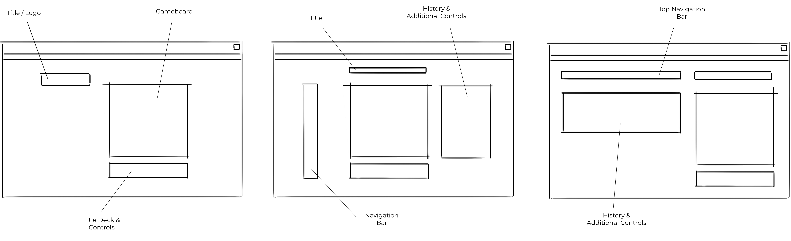

Recreating Scrabble
This project involved designing the UI/UX, front-end implementation & back-end functionality
for the board game Scrabble which includes working with the functional programming paradigm
& learning about tools such as Ramda.
Initial Wireframe Sketching

Current online Scrabble web applications were researched for inspiration.
Simple wireframe sketches were created to plan out the general layout.
The aim was to create a simple user interface with only the required components.
UI/UX development

Several iterations for the user interface were developed using Figma.
The main aims were to make the UI as simple & clear as possible
by using strong shapes & high contrast.
Currently in Progress